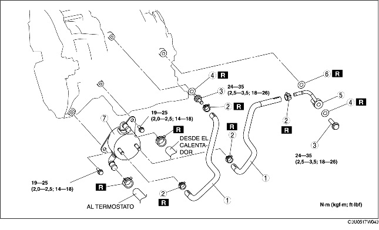

1. Quitar la tapa y el conducto de la batería. [Véase REMOCION/INSTALACION BATERIA (LF)].
2. Desconectar el cable negativo de la batería.
3. Quitar el cartucho del filtro de aire. [Véase REMOCION/INSTALACION SISTEMA DE ADMISION (LF)].
4. Quitar la tapa inferior.
5. Eliminar el líquido de enfriamiento motor. (Véase SUSTITUCION LIQUIDO DE ENFRIAMIENTO MOTOR).
6. Vaciar el ATF en un recipiente adecuado. [Véase SUSTITUCION FLUIDO CAMBIO AUTOMATICO CON DIFERENCIAL (ATF)].
7. Desconectar la manguera de agua.
8. Quitar según el orden indicado en la tabla.
9. Instalar en el orden contrario al de la remoción.
10. Rellenar con líquido de enfriamiento motor. (Véase SUSTITUCION LIQUIDO DE ENFRIAMIENTO MOTOR).
11. Controlar por si hay pérdidas de líquido de enfriamiento motor. (Véase CONTROL PERDIDAS DE LIQUIDO DE ENFRIAMIENTO MOTOR).
12. Añadir del ATF hasta el nivel especificado. [Véase SUSTITUCION FLUIDO CAMBIO AUTOMATICO CON DIFERENCIAL (ATF)].
13. Controlar por si hay pérdidas de los conductos del aceite.
14. Controlar por si hay pérdidas de los tubos flexibles.
15. Controlar el nivel y la condición del ATF. [Véase CONTROL FLUIDO CAMBIO AUTOMATICO CON DIFERENCIAL (ATF)].
16. Llevar a cabo la prueba de la presión de línea. (Véase PRUEBA SISTEMA MECANICO).

.
|
1
|
Tubo flexible del aceite
|
|
2
|
Abrazadera para tubos
|
|
3
|
Perno fileteado del conector
|
|
4
|
Guarnición
|
|
5
|
Tubo del aceite
|
|
6
|
Guarnición
|
|
7
|
Enfriador del aceite
|
1. Cada vex que se quita el cambio automático con diferencial para repararlo, es necessario limpiar el enfriador del aceite para eliminar los residuos de fluido contaminado y para evitar que el fluido se contamine de nuevo.
2. Para el procedimiento de lavado, seguir las instrucciones del fabricante.
1. Aplicar aire comprimido a la apertura lado enfriador del aceite y eliminar los residuos y los materiales extraños de los tubos de refrigeración. El aire comprimido debe aplicarse por un tiempo que no sea inferior a un minuto.
2. Alinear las referencias e instalar el tubo flexible en el tubo como se muestra en la figura.
3. Instalar la nueva abrazadera para tubos en el tubo flexible.
4. Comprobar que la abrazadera para tubos no interfiera con otros componentes.